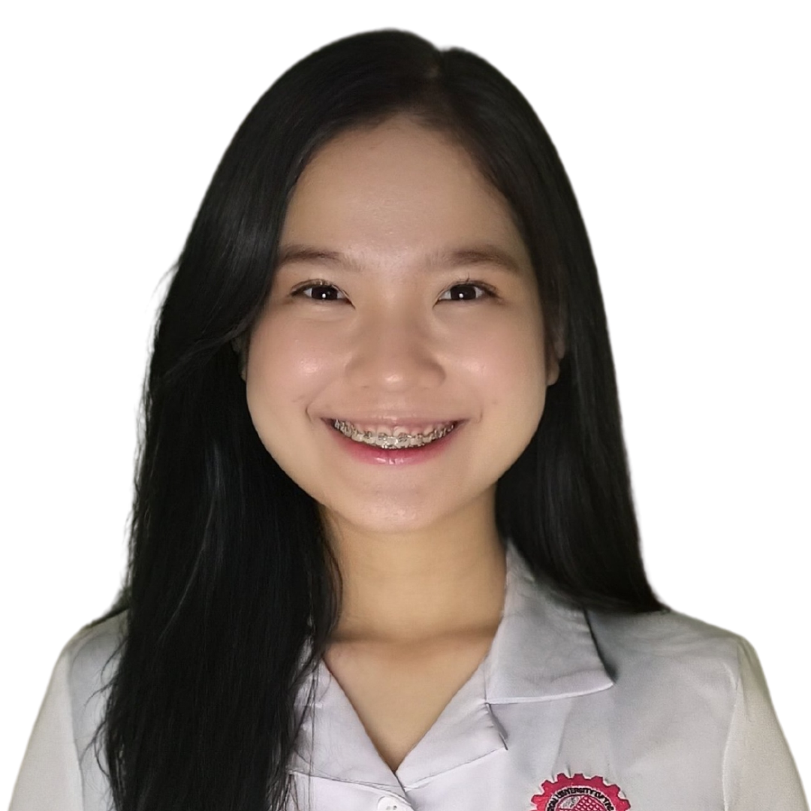

SKILLS
Personal Skills
Leadership
Management Skills
Organization and planning
Prioritization and problem-solving
Flexibility and efficiency
Attention to detail
Communication (written and verbal)
Technical Skills
Microsoft Office
Google (docs, sheets, slides,etc.)
Canva
Visual Studio
BEA CHRYZSANDRA S. ARAOJO
EDUCATION HISTORY AND ACHIEVEMENTS
 beachryzsandra.araojo@tup.edu.ph
beachryzsandra.araojo@tup.edu.ph
 09357019287
09357019287
 21 F. Victor Street Brgy.61 Pasay City
21 F. Victor Street Brgy.61 Pasay City
PROFILE
Computer-savvy and goal-oriented individual that aims to contribute to the success of the company and hone her skills through experience and compassion to learn.
Technological University of the Philippines - Manila
- Bachelor of Science in Industrial Education major in Information and Communication Technology
- Consistent Dean's Lister
- 2020-Present
Pasay City National High School
- With Honors - Senior High School
- With High Honors - Junior High School
- Leadership Awardee
- 2014-2020
Padre Burgos Elementary School
- 2008-2014
REFERENCE
Shandy Mae P. Fontanilla
Assistant Team Leader, BruntWork
shandypadao@yahoo.com
09300245992
AFFILIATIONS
- 2022-Present INTEL President
- 2022-Present LALI Vice President
- 2022-Present TUP CYC Vice President for External
- 2022-Present YAS Quality Education Ambassadress
- 2021-2022 College of Industrial Education Student Council - Governor
- 2020-2022 Class Representative
- 2019-2020 Supreme Student Government President
- 2019-2020 Supreme Student Government Division Federation Treasurer
- 2017-2020 Campus Journalism (Lawin) Editor-in-chief / News Writer
- 2019 Pasay City Little City Councilor
- 2018-2019 Supreme Student Government Vice President
- 2018-2019 Dulaang Pasay (DulSay) President
- 2018 Pasay City Little City Councilor
- 2017-2018 Supreme Student Government Secretary
- 2017 Pasay City Barangay Bureau Officer
- 2016-2017 Supreme Student Government Representative
- 2016 Pasay City ICT Officer